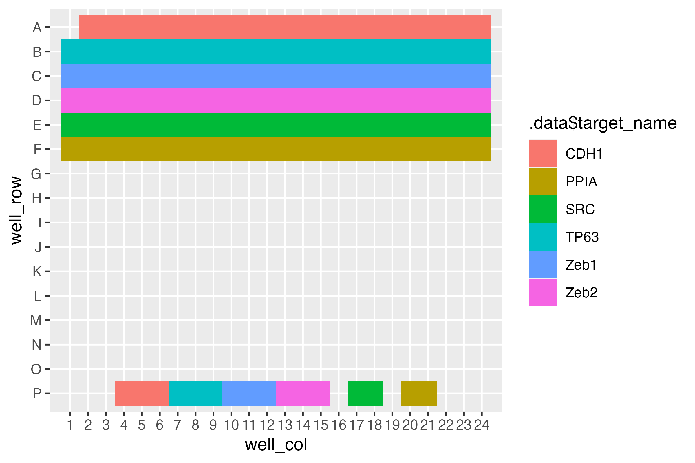
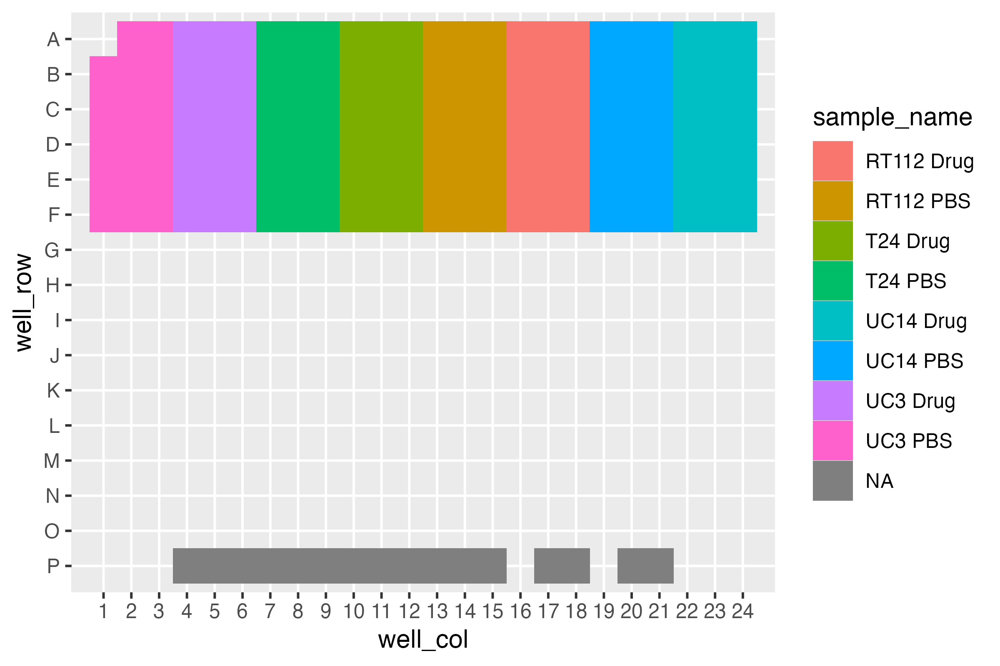
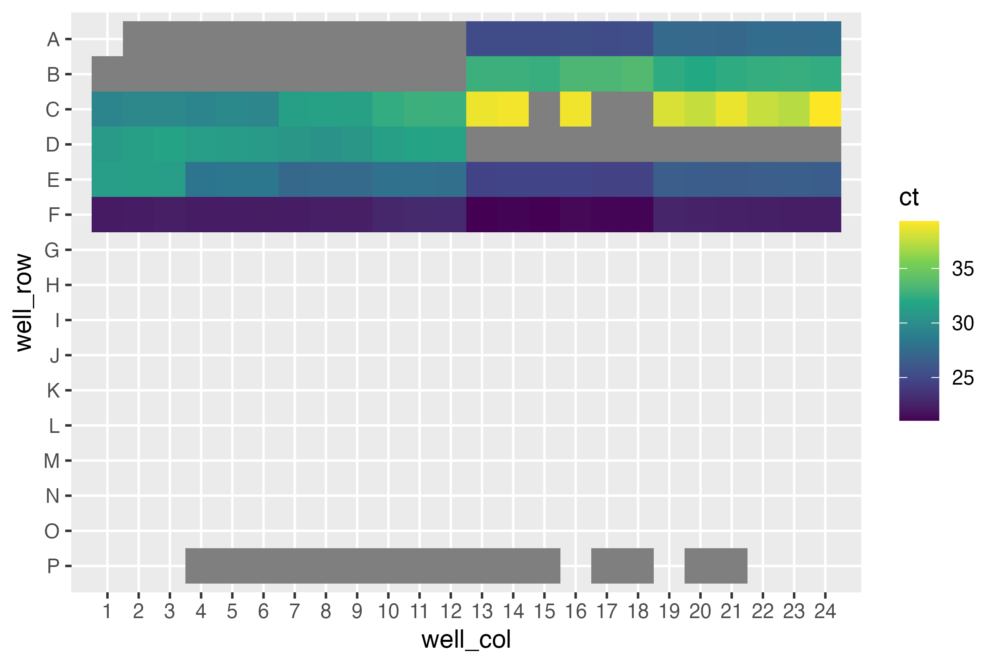
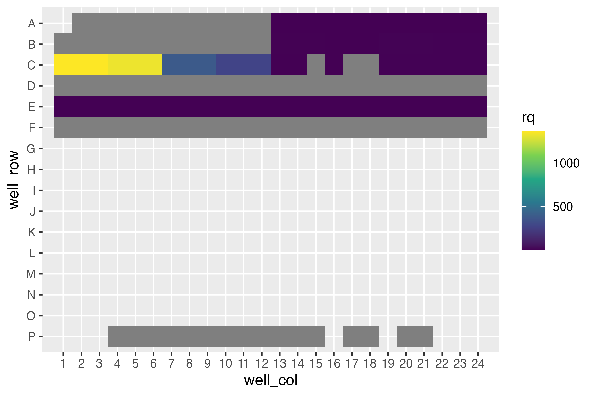
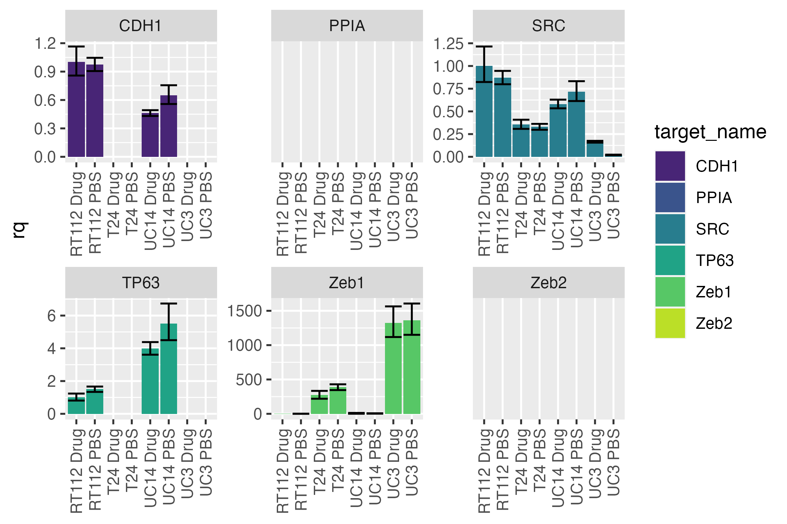
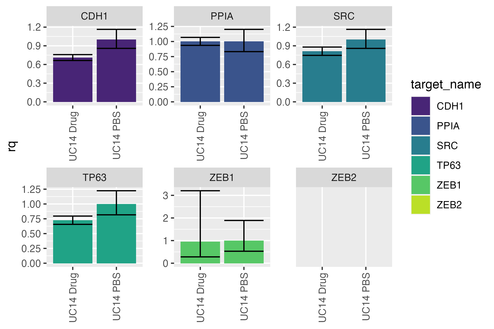
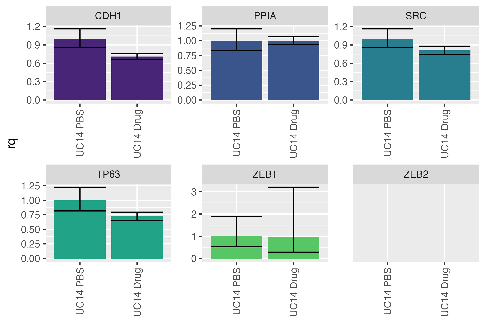
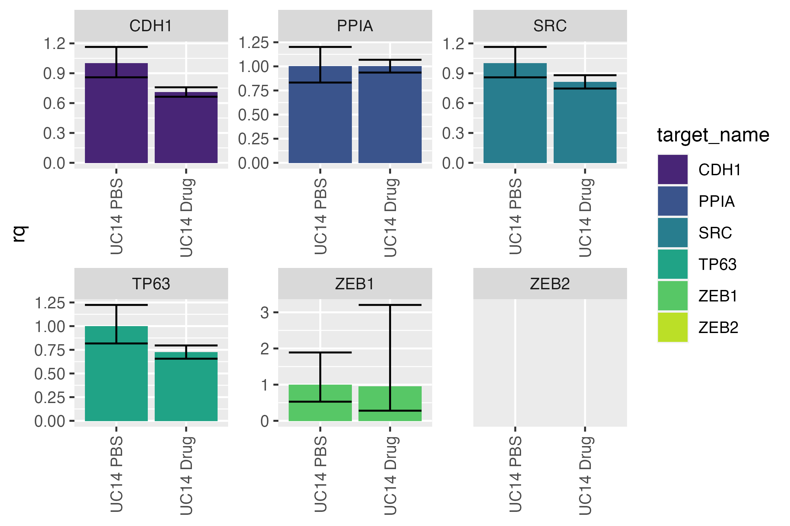
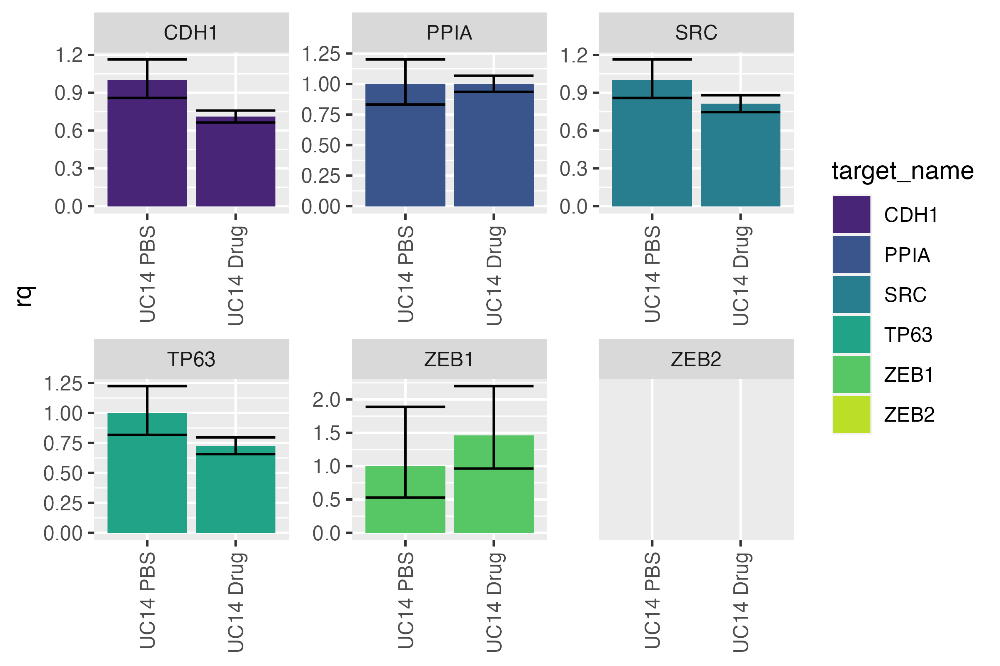

using-pcr-functions.RmdPCR data appear to be simple to work with at the outset - QuantStudio can output barcharts, and it even readily outputs the data in tabular formats. However, some tasks, like omitting a particular measurement, no longer make the results valid. One must remember to omit it in QuantStudio, recalculate the values, then plot the results - or risk having an inaccurate plot!
Additionally, the plots output by QuantStudio are fairly ugly and inflexible. Outputting them is tedious, as is rearranging columns.
In this vignette, I’ll perform a routine analysis on a rather untidy dataset using the pcr_* suite of functions. The pcr_* suite of functions seek to make life a little easier and a lot more reproducible by allowing many of the previously QuantStudio specific tasks to be done in R.
library(bladdr)
library(dplyr)
#>
#> Attaching package: 'dplyr'
#> The following objects are masked from 'package:stats':
#>
#> filter, lag
#> The following objects are masked from 'package:base':
#>
#> intersect, setdiff, setequal, union
library(ggplot2)
library(stringr)We have a particular advantage because although the data are untidy, they are untidy in a very specific way. Reading in data is as simple as running pcr_tidy, which is given a path to the pcr .xls(x) file. If no path is given, an interactive file explorer window will appear for the user to choose the file.
dat <- pcr_tidy("../inst/extdata/untidy-pcr-example-2.xlsx")
#> New names:
#> * `` -> ...3
#> * `` -> ...4
#> * `` -> ...5
#> * `` -> ...6
#> * `` -> ...7
#> * ...
#> Warning in mask$eval_all_mutate(quo): NAs introduced by coercion
dat
#> # A tibble: 159 × 40
#> well well_position omit sample_name target_name task reporter quencher
#> <chr> <chr> <chr> <chr> <chr> <chr> <chr> <chr>
#> 1 2 A2 FALSE UC3 PBS CDH1 UNKNOWN FAM NFQ-MGB
#> 2 3 A3 FALSE UC3 PBS CDH1 UNKNOWN FAM NFQ-MGB
#> 3 4 A4 FALSE UC3 Drug CDH1 UNKNOWN FAM NFQ-MGB
#> 4 5 A5 FALSE UC3 Drug CDH1 UNKNOWN FAM NFQ-MGB
#> 5 6 A6 FALSE UC3 Drug CDH1 UNKNOWN FAM NFQ-MGB
#> 6 7 A7 FALSE T24 PBS CDH1 UNKNOWN FAM NFQ-MGB
#> 7 8 A8 FALSE T24 PBS CDH1 UNKNOWN FAM NFQ-MGB
#> 8 9 A9 FALSE T24 PBS CDH1 UNKNOWN FAM NFQ-MGB
#> 9 10 A10 FALSE T24 Drug CDH1 UNKNOWN FAM NFQ-MGB
#> 10 11 A11 FALSE T24 Drug CDH1 UNKNOWN FAM NFQ-MGB
#> # … with 149 more rows, and 32 more variables: quantity <dbl>,
#> # quantity_mean <dbl>, quantity_sd <dbl>, rq <dbl>, rq_min <dbl>,
#> # rq_max <dbl>, ct <dbl>, ct_mean <dbl>, ct_sd <dbl>, delta_ct <chr>,
#> # delta_ct_mean <chr>, delta_ct_sd <chr>, delta_ct_se <chr>,
#> # delta_delta_ct <chr>, automatic_ct_threshold <chr>, ct_threshold <dbl>,
#> # automatic_baseline <chr>, baseline_start <dbl>, baseline_end <dbl>,
#> # comments <chr>, expfail <chr>, highsd <chr>, noamp <chr>, …The typical format of PCR data is woefully non-rectangular. pcr_tidy fixes this by skipping to the good bits, but also pulling out useful metadata supplied in the header and footer of the dataset - like the last few columns:
select(dat, plate_type:ref_samp)
#> # A tibble: 159 × 2
#> plate_type ref_samp
#> <chr> <chr>
#> 1 384-Well Block RT112 Drug
#> 2 384-Well Block RT112 Drug
#> 3 384-Well Block RT112 Drug
#> 4 384-Well Block RT112 Drug
#> 5 384-Well Block RT112 Drug
#> 6 384-Well Block RT112 Drug
#> 7 384-Well Block RT112 Drug
#> 8 384-Well Block RT112 Drug
#> 9 384-Well Block RT112 Drug
#> 10 384-Well Block RT112 Drug
#> # … with 149 more rowspcr_plate_view
pcr_tidy also adds two features derived from the well_position feature into two separate features - well_row and well_col. This makes downstream plotting particularly easy. A built in function can do this automatically for us:
pcr_plate_view(dat)
#> Warning: `guides(<scale> = FALSE)` is deprecated. Please use `guides(<scale> =
#> "none")` instead.
This high level overview lets us see there’s something curious going on with A1. Additionally, some wells at the bottom - likely non-targeting controls - only have two instead of three wells ascribed to them.
What about the sample layout?
pcr_plate_view(dat, sample_name)
#> Warning: `guides(<scale> = FALSE)` is deprecated. Please use `guides(<scale> =
#> "none")` instead.
We can also look at CT:
pcr_plate_view(dat, fill = ct) + scale_fill_viridis_c()
#> Warning: `guides(<scale> = FALSE)` is deprecated. Please use `guides(<scale> =
#> "none")` instead.
Looks like some didn’t amplify at all. You might consider looking at it with rq but…
pcr_plate_view(dat, fill = rq) + scale_fill_viridis_c()
#> Warning: `guides(<scale> = FALSE)` is deprecated. Please use `guides(<scale> =
#> "none")` instead.
Immediately we see a loss of information: Not only are the scales between cell lines wildly different, but some of the targets aren’t even there! What’s going on?
If we remember back, our reference sample was RT112, which does not appear to express one of the targets at all. Therefore a quantity relative to 0 doesn’t make any sense!
pcr_plot
We can naively plot all of the data at once using pcr_plot
pcr_plot(dat)
#> Warning: Removed 24 rows containing missing values (position_stack).
We notice the differences between cell lines, but the large dynamic range makes it difficult to look at differences between conditions. We can split the data up by cell line and then recalculate rqs individually.
pcr_rq
First, we need to extract the cell line from the sample name. Additionally, I don’t like how it says “Zeb1” and “Zeb2” instead of “ZEB1” and “ZEB2” (the capitalization leads one to believe we are measuring the protein Zeb1 rather than the transcript that encodes it, ZEB1). I’ll change that here.
dat <- dat %>%
mutate(cell_line = str_extract(sample_name, "^.*(?=[:space:])")) %>%
mutate(target_name = str_replace(target_name, "Zeb", "ZEB"))As an example, let’s look at UC14:
uc14 <- dat %>%
filter(cell_line == "UC14") %>%
pcr_rq("UC14 PBS")
pcr_plot(uc14)
#> Warning: Removed 2 rows containing missing values (position_stack).
I personally prefer it when the control is on the left and the experimental conditions are on the right - let’s flip them. While we’re at it, let’s get rid of the legend - it doesn’t tell us any extra information and is just taking up space.
uc14 <- uc14 %>%
mutate(sample_name = factor(sample_name, levels = c("UC14 PBS", "UC14 Drug")))
pcr_plot(uc14) +
theme(legend.position = "none")
#> Warning: Removed 2 rows containing missing values (position_stack).
The same kind of reorganization can be done with target_names as well - if you wanted to put the control target (here PPIA) at the end.
Suppose you have reason to believe that one of your colleagues (or perhaps you yourself) spit into your C22 well (the spit was very accurate). If we naively remove it, this is what we get:
naive <- uc14 %>%
filter(well_position != "C24")
pcr_plot(naive)
#> Warning: Removed 2 rows containing missing values (position_stack).
Umm…it doesn’t look any different. And that’s what we should expect: the plotting function doesn’t do any calculations: It only plots the values already stored within it. To get updated values, we need to use pcr_rq again:
wise <- uc14 %>%
filter(well_position != "C24") %>%
pcr_rq("UC14 PBS")
pcr_plot(wise)
#> Warning: Removed 2 rows containing missing values (position_stack).
There we go! A nice updated chart.